01 · D1 normal cercanoSin Construir · lugar postapocalíptico
01 · D1 normal cercanoSin Construir · lugar postapocalíptico
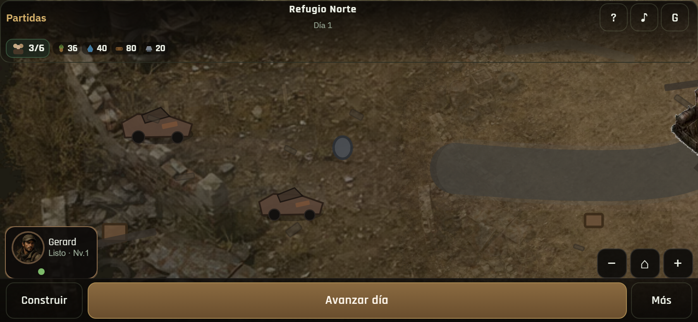
02 · Pan carretera oesteAparcamiento / vía
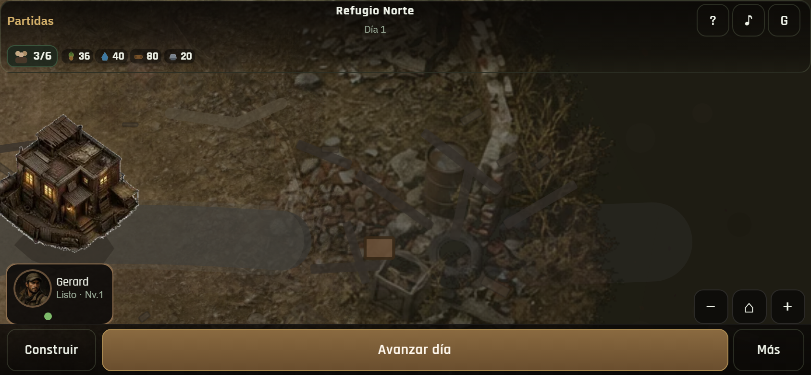
03 · Pan ruinas esteZona urbana destruida
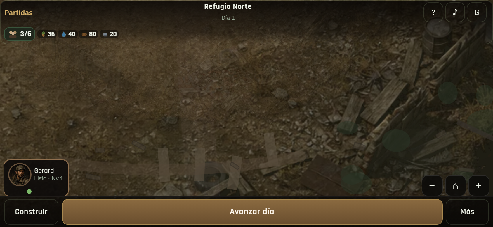
04 · Pan sur / abiertoIdentidad distinta
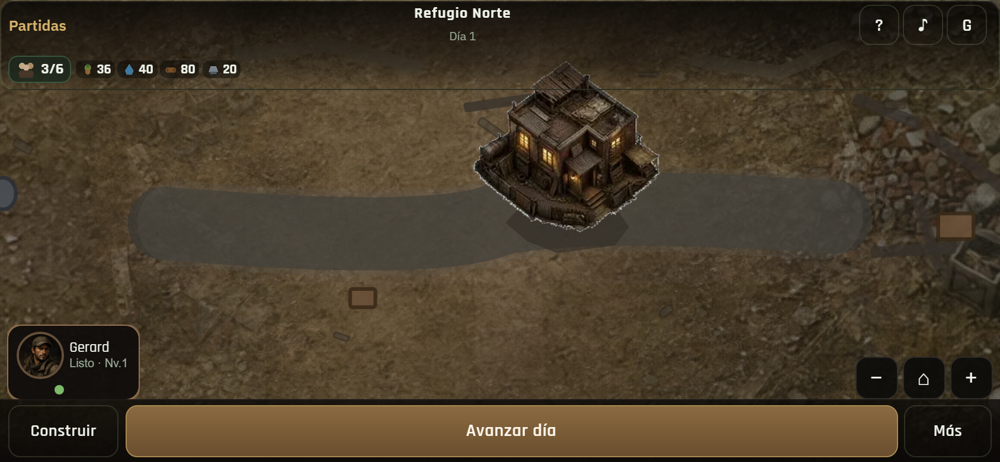
05 · Núcleo integradoHQ en el mundo · sin modo build
 06 · Misma zona SIN construirSin parcelas visibles
06 · Misma zona SIN construirSin parcelas visibles
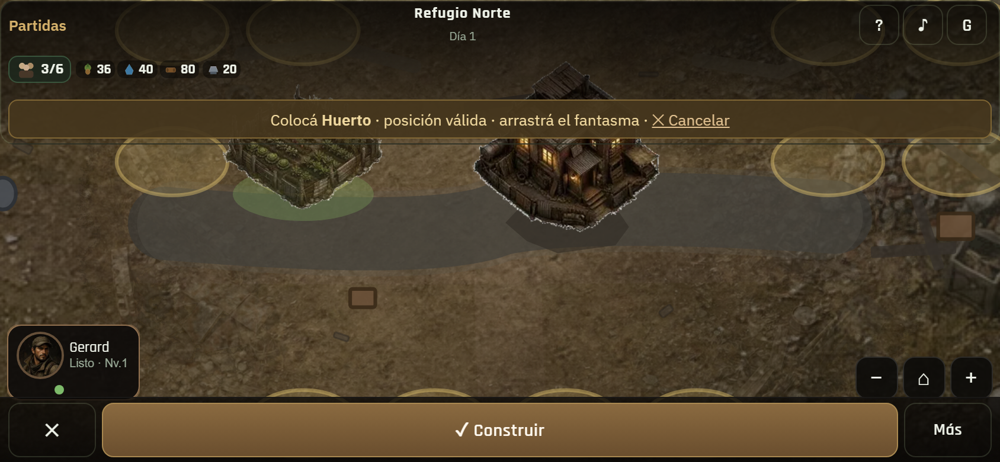
07 · Misma zona EN construirSuperficies reveladas · varias disjuntas
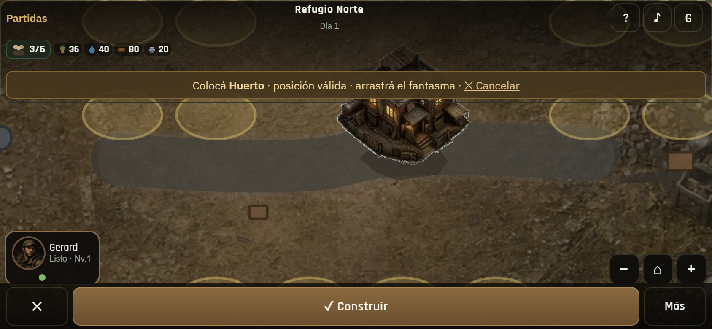
08 · Ghost válidoSobre superficie edificable
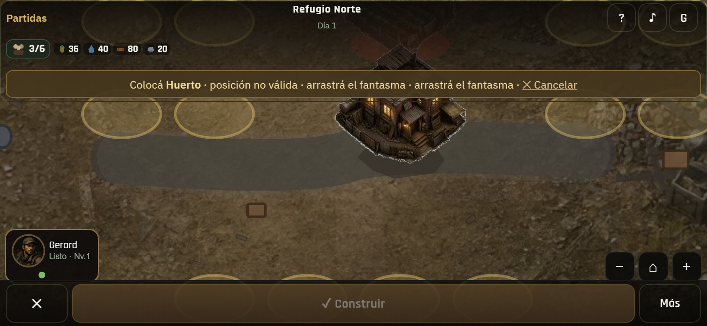
09 · Ghost inválidoSobre carretera/ruina
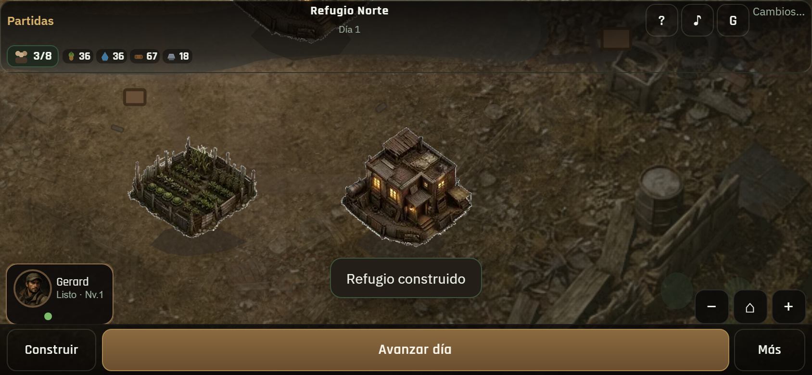
10 · Varias distribucionesMisma superficie · layouts distintos
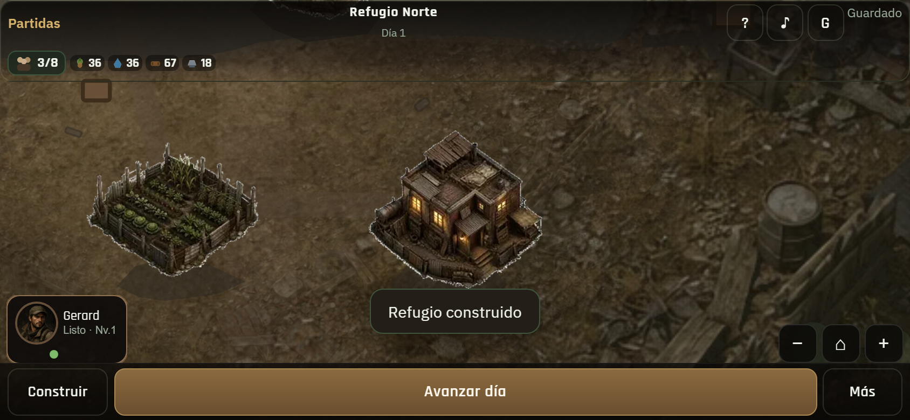
11 · Zoom cercanoEscala agradable
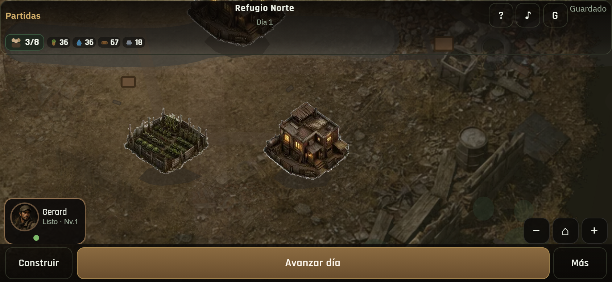
12 · Zoom alejadoOrientación general
 13 · 844×390Landscape móvil
13 · 844×390Landscape móvil
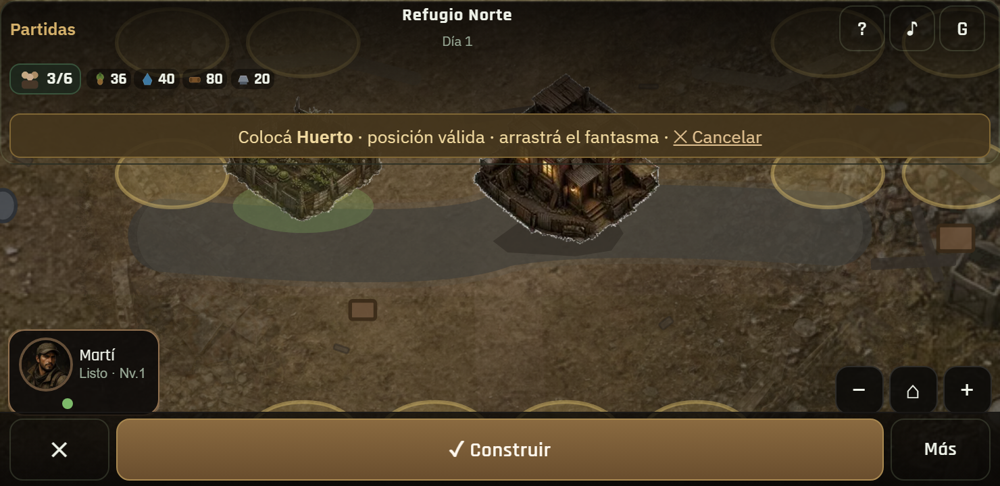
14 · 740×360 buildSuperficies legibles
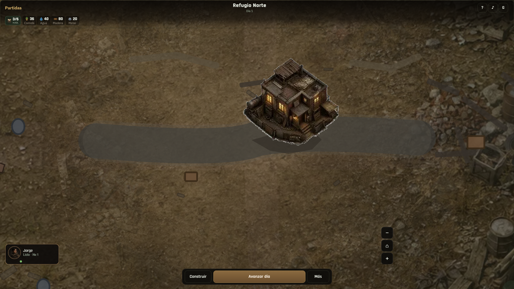
15 · Desktop mundoEscenario > viewport
 16 · Desktop construirSuperficies + ghost
16 · Desktop construirSuperficies + ghost